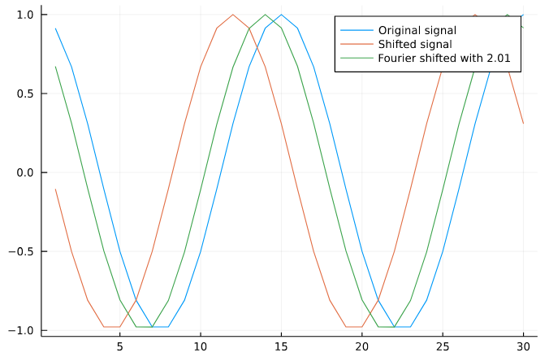

Shifting
Using the Fourier shift property one can implement shifting of arrays not only over pixel but also sub-pixel amount.
Examples
For full interactivity, have a look at this Pluto notebook.
begin
f(x) = cos(4π * x / 30)
x1 = 1:30
x2 = x1 .+ 3
end
begin
y1 = f.(x1)
y2 = f.(x2)
offset = 2.01
y3 = shift(y2, tuple(offset))
end
begin
plot(y1, label="Original signal")
plot!(y2, label="Shifted signal")
plot!(y3, label="Fourier shifted with $offset")
end
Function references
FourierTools.shift — Functionshift(arr, shifts)Returning a shifted array. See shift! for more details
FourierTools.shift! — Functionshift!(arr, shifts)Shifts an array in-place. For real arrays it is based on rfft. For complex arrays based on fft. shifts can be non-integer, for integer shifts one should prefer circshift or ShiftedArrays.circshift because a FFT-based methods introduces numerical errors.
Memory Usage
Note that for complex arrays we can avoid any large memory allocations because of fft!. For rfft there does not exist a usable implementation yet, so for real arrays there might be a temporary larger memory usage.
Examples
julia> x = [1.0 2.0 3.0; 4.0 5.0 6.0]
2×3 Matrix{Float64}:
1.0 2.0 3.0
4.0 5.0 6.0
julia> shift!(x, (1, 2))
2×3 Matrix{Float64}:
5.0 6.0 4.0
2.0 3.0 1.0
julia> x = [0, 1.0, 0.0, 1.0]
4-element Vector{Float64}:
0.0
1.0
0.0
1.0
julia> shift!(x, 0.5)
4-element Vector{Float64}:
0.49999999999999994
0.5
0.49999999999999994
0.5